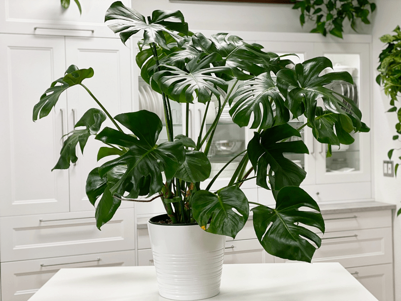
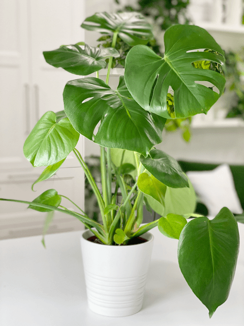

Monstera Deliciosa | Care Difficulty – Moderate
Like many plants, it goes by many different names: ceriman, Swiss cheese plant, Monstera, Mexican breadfruit, Monstera deliciosa, or a split-leaf philodendron. I refer to it as a Monstera…though learning that some call it Mexican breadfruit is quite intriguing. I wonder how that name came into being.

I have come to discover that caring for the Monstera deliciosa is surprisingly easy. I have two of them as I write this post, and they couldn’t be any happier. I have a small one on our piano, though I have to admit, it’s been growing rather steadily and I think come spring it will require a larger pot and possibly a new location.
My other Monstera is HUGE! The floor area that it takes up is rather large, which makes me wonder where the other one will go as it grows. Both of my plants are near a north-facing window, which lets in a lot of indirect natural light. I quickly found out that it is a good idea to train the plant by using stakes to support and shape this gorgeous monster as it grows.
The massive leaves are stunning, so it’s essential to keep the leaves clean to allow photosynthesis to work its magic! If the Monstera deliciosa gets enough indirect light, it will produce fenestrations (natural holes and openings in the leaves) after the first five or six leaves have appeared. Scientists have speculated about the reason for the holes in Monstera leaves: one theory is that this perforation maximizes the leaf’s surface area, and therefore its ability to capturing sunlight on the rainforest floor; the other is that it allows tropical downpours to pass through the leaves, thereby limiting damage to the plant, which explains Monstera’s other name: hurricane plant.
Light Requirements
- These indoor plants can handle low light, but if you want them to grow faster and produce larger leaves and fenestrations in the leaves, be sure to provide medium to bright indirect light.
- Do not place them in a spot that receives DIRECT sunlight, as it can burn the leaves.
Water Requirements
- These plants love a good soaking after the soil has almost completely dried out. Water more often during the warmer months while they are growing, and reduce watering during the winter months, letting the soil almost completely dry out between watering.
- Once it’s been watered, I make sure that I empty the excess water that catches in the cover pot. Standing water can lead to root rot and also attract fungus gnats. (Read more below on those pesky things.)
Temperature Requirements
- The Monstera will grow in temperatures that range between 65-85 degrees (F). They can survive in temperatures as low as 50 degrees (F), but the cold temperature will stop growth. Avoid sudden temperature swings, cold drafts, and heat vents.
Fertilizer – Plant Food
- It is best to fertilize the plant during the active growing season, so be sure to use either 1/4-diluted fish emulsion with iron or 1/4-diluted complete liquid fertilizer twice a month. Alternatively, another option is to top-dress your plants in the spring with worm castings. The castings will slowly release nutrients to the roots throughout the growing season.
Repotting
- It’s a good idea to repot young plants every year to encourage growth and add soil nutrients.
- Gradually go up in pot size by 2 inches per year. Once your plant has reached its optimal height for your space, you can give it a top dressing of new soil once a year and repot it every three years.
- Always use a high-quality potting soil to help keep the soil moist but free-draining.
- These plants are natural climbers that use their aerial roots to hold on to trees. When you repot, be sure to add a trellis or plant stake for support.
- If you can’t commit to a whole Monstera —or if yours is running rampant—trim a leaf or two and stand them upright in a clear glass vase.
Additional Care
-
Remove any dead, discolored, damaged, or diseased leaves and stems as they occur with clean, sharp scissors. I look over my plants every time I water them.
-
Clean the leaves often enough to keep dust off of them. Use a damp cloth and lightly rub off any dust to keep the leaves healthy and shiny.
- To curb excessive growth, avoid repotting too often, and regularly prune by pinching off new growth.
- You can stake the plant not only for aesthetic purposes but also to support the plant and help it grow more vertically. You can do this by simply inserting a moss totem and attaching the stems of the plant to it with prongs.

Plant Characteristics to Watch For
Diagnosing what is going wrong with your plant is going to take a little detective work and even more patience! First of all, don’t panic and don’t throw a plant out prematurely. Take a few deep breaths and work down the list of possible issues. Below, I am going to share some typical symptoms that can arise. When I start to spot troubling signs on a plant, I take the plant into a room with good lighting, pull out my magnifiers, and begin by thoroughly inspecting the plant.
My plant has more growth on one side than the other.
- My plant is reaching out more on one side.
- Solution – Rotate your plant periodically to ensure even growth on all sides and dust the leaves often so the plant can photosynthesize efficiently.
The leaves are yellowing.
- If Monstera is given too much sun or doesn’t get enough water, the leaves will yellow.
- Solution: Double-check the lighting that is coming through the window during ALL times of the day. The plant shouldn’t be receiving direct light. If need be, relocate the plant to a better location. If it appears to be a watering issue, double-check the moistness of the soil and water if needed.

The leaves are yellowing with brown on them.
- If you see a combination of yellow and brown on the same leaf, it is typically due to overwatering.
- Solution: Easy, back off on the watering. Remember, watering needs to shift as the seasons do, so don’t get locked into a set watering pattern. Rest assured that you can remove any yellow or brown leaves by simply cutting them off at the base. Be sure to check the soil, and if it’s wet to the touch (particularly at the bottom), let it dry out completely before watering again. Overwatering can lead to more severe ailments, and that may eventually require you to change the soil.
The leaves have brown spots on them.
- If the leaves have brown spots on them, they may be sunburns, from direct sunbeams on the leaves.
- Solution: Move to a spot with indirect light but NOT direct light. If you don’t have another place to move it to, due to its size, hang a sheer curtain in the window to diffuse the direct sunlight.
The leaves appear pale and translucent
- The plant may not be getting enough light to produce chlorophyll and photosynthesize.
- Solution: Relocate the plant to space that provides more indirect sunlight.
The leaves have dry edges.
- If the leaf outline is brown, the room air is too dry.
- Solution: These plants do like humidity, so either move it to a space that isn’t too dry or add a room humidifier. If it’s winter, take a peek to see where the heat vents are; this could be an issue.
My plant is growing weird, leafless brown growths!
- These growths are completely normal. No need to panic. These are aerial roots, and they are totally normal. In nature, these are what help give support to the plant and allow it to climb and reach more light. The roots will not damage walls or surfaces, and you can always prune them if they get unruly.
Why isn’t my Monstera forming splits or holes on its leaves?
- Many different factors can cause this, but generally, it means your plant doesn’t have ideal conditions.
- Solution: Check the amount of light and water it is receiving, and adjust as needed. You can also take your plant’s aerial roots and push them down into the soil so the plant can absorb more nutrients. Keep in mind that your plant will develop holes only on its more mature leaves, so sometimes, you just have to exercise patience.
My Monstera has gotten way too big. What can I do?
- Remember, these are naturally large plants, but you help train them to fit the space you have allotted for them.
- Solution: Prune it back! There is no harm in doing so. They can handle a good trim. You can also train your Monstera to grow whichever way your heart desires by using stakes and ties. To curb excessive growth, avoid repotting too often and regularly prune by pinching off new growth.
The leaves are curling.
- If the leaves of your Monstera are curling, your plant is most likely underwatered.
- Solution: You can quickly fix this issue by giving your plant a thorough “shower” — take it out of its decorative pot and place it outside or in a bathtub. Give it plenty of water and let it drain out completely before putting it back in its pot. Another method is to let it sit in water for a few hours, giving the roots a chance to drink.
The leaves are wilting or drooping.
- If your Monstera looks droopy or the leaves are wilting, this could be one of two things — overwatering or underwatering!
- Solution: Check the soil. If it’s bone dry, follow the instructions above to give it a good shower. If it’s moist, you most likely overwatered it and should wait until it’s dried out before watering again. During this time, make sure it’s getting enough light (bright indirect is ideal) so that it can dry out properly.
-

-
Mealybugs
-

-
Scales
-

-
Spider mites
-

-
Aphids
Common Bugs to Watch For
Monstera is rarely bothered by pests or disease, but don’t think that they are 100% impervious. If you want to have healthy house plants, you MUST inspect them regularly. Every time I water a plant, I give it a quick look-over. Bugs/insects feeding on your plants reduces the plant sap and redirects nutrients from leaves. Some chew on the leaves, leaving holes in the leaves. Also watch for wilting or yellowing, distorted, or speckled leaves. They can quickly get out of hand and spread to your other plants.
If you see ONE bug, trust me, there are more. Take action right away. Some are brave enough to show their “faces” by hanging out on stems in plain wight. Others tend to hide out in the darnedest of places, like the crotch of a plant or in a leaf that has yet to unfurl.
- Mealybugs look like small balls of cotton. They can travel, slooooooowly, but they have a strong will and determination! Though they move slowly, if any plant is touching another, there is a chance the mealybug will hitch a ride on a new leaf and spread. They breed like rabbits of the insect world. Females can deposit around 600 eggs in loose cottony masses, often on the underside of leaves or along stems.
- Scales are dark-colored bumps that are primarily immobile insects that stick themselves to stems and leaves. They are rather inconspicuous and don’t look like a typical insect. They can range in color but are most often brownish in appearance. They’re called “scales” primarily due to their scale-like appearance on a plant, due to waxy or armored coverings. They are often seen in clumps along a stem, sucking away at the plant’s juices with their spiky mouthpart.
- Aphids are more commonly seen if you place your plants outdoors. Aphids are indeed bugs. They are tiny insects that, along with black, also come in shades of yellow, green, brown, and pink. They are often found on the undersides of leaves.
- Spider mites are more common on houseplants. They are not insects – they are related to spiders. These appear to be tiny black or red moving dots. Spider mites are nearly invisible to the naked eye. You often need a magnifying lens to spot them, or you may just notice a reddish film across the bottom of the leaves, some webbing, or even some leaf damage, which usually results in reddish-brown spots on the leaf.
Toxicity
All parts of the plant are toxic to people except for the ripe fruit, and according to the ASPCA, Monstera deliciosa is toxic to dogs and cats. Oh, did I forget to mention that they can grow fruit? They can indeed, but this is uncommon for indoor house plants.
© AmieSue.com